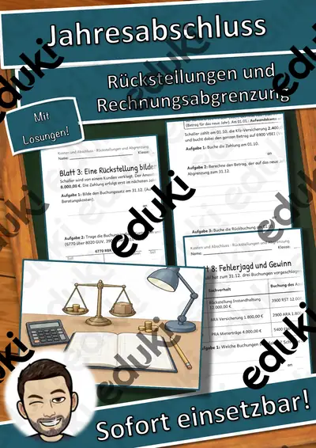
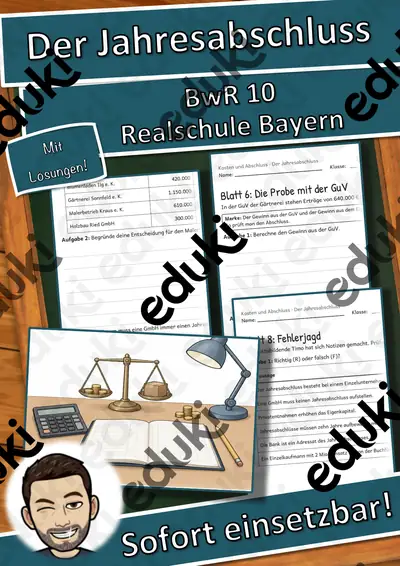
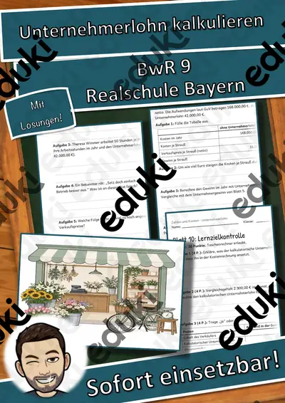

Materialpaket BwR Klasse 8 Realschule Bayern – Aufwand, Personal und Jahresabschluss: 9 Arbeitshefte mit Lösungen
9 Arbeitshefte BwR Klasse 8 (Realschule Bayern) – im Paket zum halben PreisDu unterrichtest BwR an der Realschule und möchtest nicht jedes Arbeitsblatt selbst erstellen? Dieses Paket bündelt 9 Arbeitshefte für BwR Klasse 8 zum Bereich „Aufwand, Personal und Jahresabschluss“. Alle Hefte sind aufeinander abgestimmt und enthalten Lösungen: Du sparst Vorbereitungszeit und hast durchgängig stimmige, fachlich geprüfte Aufgaben.
Preisvorteil und Zeitersparnis: Einzeln gekauft kosten die 9 Materialien regulär zusammen 27,91 €. Im Paket zahlst du nur 13,95 € und sparst damit rund 50 %. Dazu sparst du dir das Zusammensuchen und Abstimmen: Alles passt schon zusammen, ist sofort einsetzbar und liegt in einem Download bereit. Alle Materialien sind sorgfältig gearbeitet, vom Autor geprüft und enthalten Lösungen bzw. Musterlösungen, sodass du dir auch die Korrektur-Vorbereitung sparst.
Die 9 Materialien im Paket
Aufwendungen und Erträge buchen – Arbeitsheft mit Lösungen (BwR 8, Realschule Bayern): Die Lernenden buchen für das Spielzeugwerk Rollfreude e.Personalaufwand buchen – Arbeitsheft mit Lösungen (BwR 8, Realschule Bayern): Für das Fach Betriebswirtschaftslehre/Rechnungswesen (BwR), Jahrgangsstufe 8, an der Realschule in Bayern.
Personal: Die Lernenden bestimmen den Personalbedarf, lesen eine Stellenanzeige, wählen mit einer Bewertungstabelle aus, unterscheiden zulässige und unzulässige Fragen im Vorstellungsgespräch und lernen die wichtigsten Punkte des Arbeitsvertrags kennen.
Was ein Mitarbeiter wirklich kostet – Arbeitsheft mit Lösungen (BwR 8, Realschule Bayern): Für das Fach Betriebswirtschaftslehre/Rechnungswesen (BwR), Jahrgangsstufe 8, an der Realschule in Bayern.
Werkstoffverbrauch buchen – Arbeitsheft mit Lösungen (BwR 8, Realschule Bayern): Das Material führt von der Eingangsrechnung bis zum Werkstoffverbrauch.
Werkstoffe buchen – Arbeitsheft mit Lösungen (BwR 8, Realschule Bayern): Die Lernenden begleiten das Küchenmöbelwerk Eschenau e.Materialverbrauch – Arbeitsheft mit Lösungen (BwR 8, Realschule Bayern): K. durch ein Geschäftsjahr: Sie ordnen Werkstoffe den Materialarten und Konten zu, buchen den Einkauf, berechnen den Verbrauch aus Anfangsbestand, Zugang und Schlussbestand, buchen Bestandsveränderungen bei Roh-, Fremdbau-, Hilfs- und Betriebsstoffen und beurteilen Vor- und Nachteile des Just-in-time-Prinzips.
Jahresabschluss – Arbeitsheft mit Lösungen (BwR 8, Realschule Bayern): Die Lernenden begleiten die Holzspielzeug-Herstellerin Kerstin Kuller (Holzspielzeug Kullerauge e.Der Jahresverlauf im Unternehmen – Arbeitsheft mit Lösungen (BwR 8, Realschule Bayern): K. durch ein ganzes Geschäftsjahr: Sie tragen die Anfangsbestände (AB) aus der Eröffnungsbilanz in die Konten ein, buchen zwölf typische Geschäftsfälle (Einkauf, Verkauf, Zahlungen, Aufwendungen, Darlehen, Privatentnahme), führen die wichtigsten Konten, nehmen die vorbereitenden Abschlussbuchungen vor und schließen über das Gewinn- und Verlustkonto (8020 GUV) und das Schlussbilanzkonto (8010 SBK) ab.
Lehrplanbezug (LehrplanPLUS Bayern, Realschule, Betriebswirtschaftslehre/Rechnungswesen, Jahrgangsstufe 8)BwR Jahrgangsstufe 8, Lernbereich „Aufwand, Personal und Jahresabschluss“: Aufwendungen und Erträge buchen; Personalaufwand buchen; Personal: Beschaffung, Lohn und Gehalt; Was ein Mitarbeiter wirklich kostet; Werkstoffverbrauch buchen; Werkstoffe buchen; Materialverbrauch; Jahresabschluss; Der Jahresverlauf im Unternehmen.
Jedes Arbeitsheft enthälterklärende Einstiege und Merkkästen
Aufgaben im Prüfungsstilvollständige Lösungen
Insgesamt umfasst das Paket 140 Seiten.
Einsatzmöglichkeiten
Die Hefte eignen sich für den Unterricht, Übungsphasen, Hausaufgaben, Wiederholung vor Schulaufgaben und Vertretungsstunden.
Viel Freude mit deiner Klasse wünscht dir Snice!
Ähnliche Materialien

Jahresabschluss – Arbeitsheft mit Lösungen (BwR 10, Realschule Bayern)
Jahresabschluss – Arbeitsheft mit Lösungen (BwR 8, Realschule Bayern)

Der Jahresabschluss – Arbeitsheft mit Lösungen (BwR 10, Realschule Bayern)

Personal: Beschaffung, Lohn und Gehalt – Arbeitsheft mit Lösungen (BwR 8, Realschule Bayern)

Der Kontenplan: Ordnung im Rechnungswesen – Arbeitsheft mit Lösungen (BwR 8, Realschule Bayern)

Aufwendungen und Erträge buchen – Arbeitsheft mit Lösungen (BwR 8, Realschule Bayern)

Betriebsergebnis und Abgrenzung – Arbeitsheft mit Lösungen (BwR 10, Realschule Bayern)
